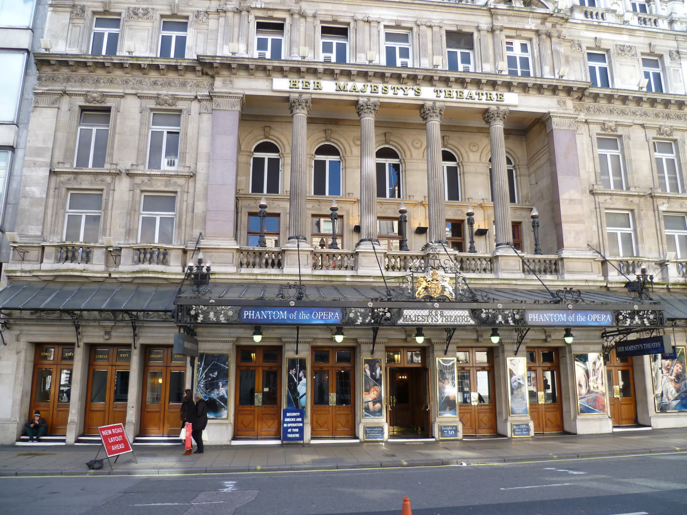
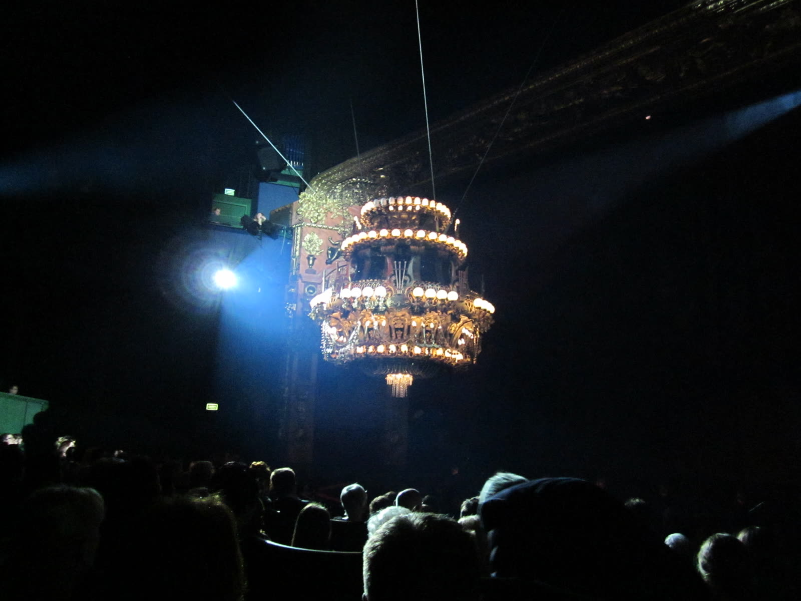

Tonight
오페라의 유령
The Phantom of the Opera
- 작곡
- 앤드루 로이드 웨버
- 원작
- 가스통 르루, 1910
- 시간
- 약 150분 · 인터미션 20분
- 관람
- 7세 이상

서울 · 오늘 한 회
오페라의 유령
오늘 게시
Tonight
The Phantom of the Opera
이 문은 식당이 아닙니다. 한 회만을 위해 열립니다. 가면 뒤의 작곡가와, 그의 수업을 받은 소프라노, 그리고 다시 마주친 후원자의 밤입니다.
박수는 막이 내린 뒤에. 휴대전화는 객석에 들이지 않습니다. 늦으면 1막이 끝난 뒤에야 자리가 열립니다.
프로그램 펼치기
지하에서 올라온 선율이
오늘 밤, 하우스 노트
돔을 한 바퀴 돈 뒤에야
객석의 불이 꺼집니다.